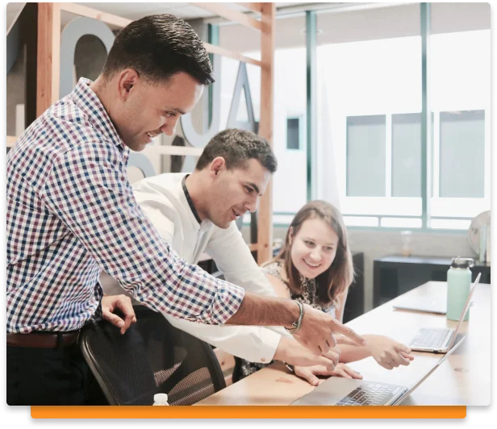

Goede Voorpagina?
Waarom is je voorpagina zo belangrijk?
Een excellente voorpagina onderscheidt jou van de massa. Het plaatst je vooraan in de rij: bezoekers zullen je vaker vinden, langer blijven, en het allerbelangrijkste, ze zullen vaker terugkomen.
Prestaties
Een trage laadtijd kan leiden tot verlies van bezoekers en het uitblijven van conversies. Google en andere zoekmachines gebruiken allerlei metingen om te bepalen waar jouw website in de zoekresultaten uitkomt. De belangrijkste factor hierbij is hoe snel een webpagina klaar is om gelezen te worden. Ook haken bezoekers vaak af als een website traag is. Als je geen leads wilt verliezen kunnen wij je helpen om je website uitstekend te laten presteren.
Toegankelijkheid
Het uitsluiten van een groot publiek, vooral oudere gebruikers, kan eenvoudig gebeuren. Denk aan:
- Bezoekers met beperkte motoriek
- Links en knopjes kunnen te klein zijn of te dicht bij elkaar en daardoor moeilijk te raken
- Iemand die geen leesbril bij de hand heeft
- Te kleine en vage fonts kunnen jouw website onbruikbaar maken
- Mensen die niet meer goed kunnen zien
- Te weinig contrast tussen tekst en achtergrond is echt een belemmering
‘Google Lighthouse’ beoordeling
Je kunt je ‘Lighthouse Rating’ rechtstreeks van Google verkrijgen. Ze gebruiken deze rating om websites in de zoekresultaten te plaatsen. Daarnast is de rating een indicatie van hoe een bezoeker jouw website zal ervaren.
Een hele belangrijke aspect is dat jouw website op zowel desktop als mobiel goed werkt.
Naleving van internationale normen
De World Wide Web Consortium (w3.org) geeft richtlijnen en normen uit waaren websites beter aan kunnen voldoen. Voldoet jouw website er niet aan, dan maakt het uit welke browser een bezoeker gebruikt. Denk aan Internet Explorer: je site kan er heel anders uitzien, zelfs niet goed werken!
Over ons
Four Times Better heeft meer dan twintig jaar ervaring in de sector. Daardoor staan we aan de top van webontwikkeling en -verbetering.
Wat kunnen we voor je betekenen?
20
Jaar Ervaring
4
Focuspunten
100+
Projecten
Onze expertise
Waarom voor ons kiezen?
Bij Four Times Better hanteren we een 4x-benadering voor al onze projecten. Door ons te concentreren op websiteprestaties, toegankelijkheid, SEO en naleving van normen, helpen wij onze klanten een beter rendement te halen.
Met onze 20 jaar ervaring in de webontwikkelingsbranche en onze bewezen staat van dienst, zijn we als weinig anderen in staat je goed, snel en vakkundig te helpen, zonder dat je daarvoor veel moet betalen.
Prestatieverbetering
Een trage laadtijd kan leiden tot verlies van bezoekers en het uitblijven van conversies. Google en andere zoekmachines gebruiken allerlei metingen om te bepalen waar jouw website in de zoekresultaten uitkomt. De belangrijkste factor hierbij is hoe snel een webpagina klaar is om gelezen te worden. Ook haken bezoekers vaak af als een website traag is. Als je geen leads wilt verliezen kunnen wij je helpen om je website uitstekend te laten presteren.
Voldoen aan industriestandaarden en andere best practices
Onze aanpak zorgt ervoor dat jouw website voldoet aan de nieuwste normen en voorschriften. Het is essentieel dat een site deze digitale 'regels' volgt om goed te presteren en hoog te scoren in de zoekresultaten van zoekmachines, en om het vertrouwen van de gebruikers te behouden.
Google rating verbeteren
Wij verwerken de issues die in de 'Google Lighthouse' rapport staan, zowel voor die desktop als voor mobile. Wij verbeteren daarmee zowel de plaatsing van je website in zoekresultaten als het gevoel dat je gebruikers eraan overhouden. Dit zorgt voor meer bezoekers, dat ze langer blijven en dat ze vaker terugkomen.
Toegankelijkheid verbeteren
Wij geven prioriteit aan het begrijpelijk maken van je site voor alle gebruikers. Wat ons onderscheidt, is dat we ons ook richten op toegankelijkheid voor oudere gebruikers, iets dat veel digitale bureaus naast zich neer leggen. Dit zorgt ervoor dat jouw website een breed publiek bedient en maatschappelijk verantwoord ondernemen demonstreert.
Tevreden Klanten
Wat onze klanten zeggen
“De aanpak van Four Times Better was professioneel, gestructureerd en haalde de deadlines. Dankzij hun advies kon ik voor mijn klanten websites hoger in Google laten ranken, wat hen blij maakte, omdat ze hun omzet zagen stijgen.”
Mattia Peiretti
Founding Partner & CTO
PhobosMedia
“Four Times Better heeft ons laten zien dat er vier problemen waren in de code van één van onze websites, ifsq.org. Ze hebben in 2 dagen het nodige gedaan om de voorpagina 8 keer sneller te maken. Sindsdien geeft ook de validator van W3C ons een perfecte score.”
Aaron Tasker
Head of Engineering
SQMI BV